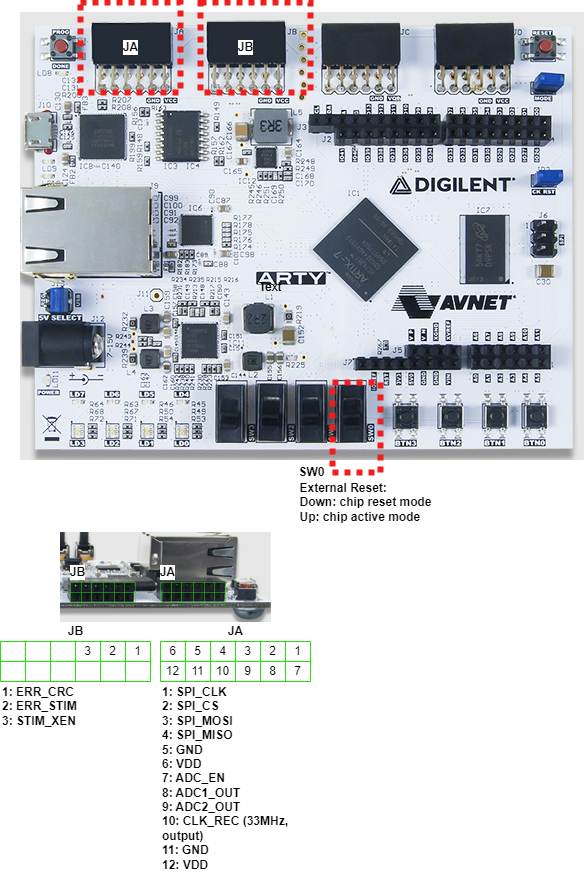
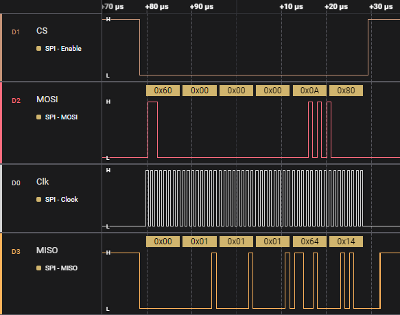
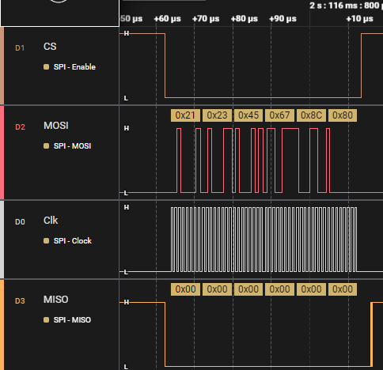
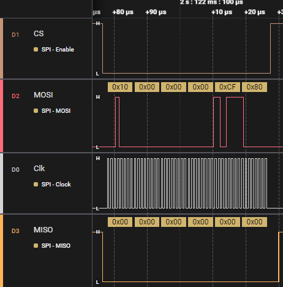
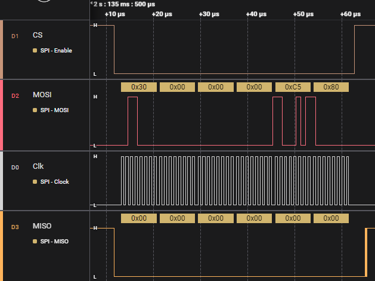
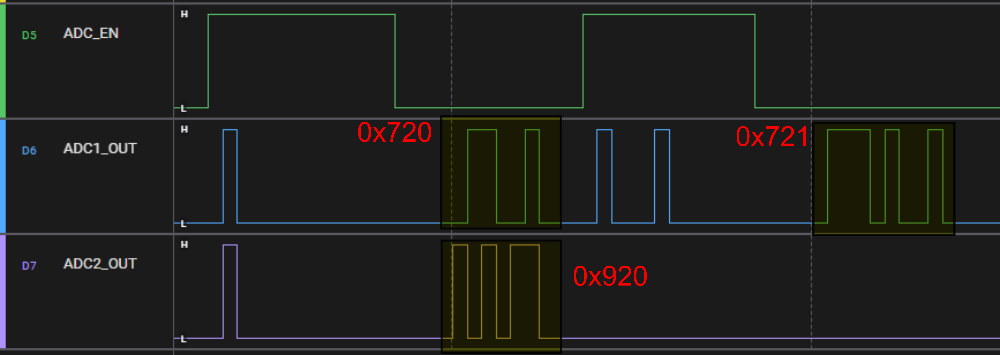
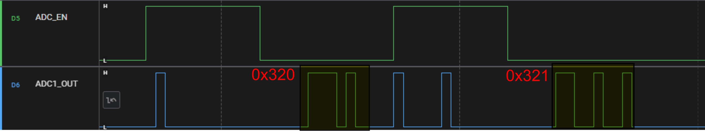

FPGA Prototype¶
It prototypes the W_ICONs chip with the following changes and limitations: - Register file size is greatly reduced to integrate only 4 stimulation channels’ parameters. - Analog macro is replaced with a synthesized analog macro to: - Imitates the recording behavior for all 64 channels
- each channel generates distinct constant values that can be easily recognizable.
- Recording
- `Ch0~31: value= 18'h0720+ 2'b10 * idx; idx=0..31`
- `Ch31~64: value= 18'h0920+ 2'b10 * idx; idx=0..31`
- Recording during the stimulation
- `Ch0~3: value= 18'h0320+ 2'b10 * idx; idx= 0..3`
- `Ch31~64: Not available;`
No stimulation output can be observed but the logic for 4 channels is included.
Author
Created by Ali Zeinolabedin on 02/09/2024.
Latest Update: 03/28/2024 by Ali Zeinolabedin
FPGA Architecture¶
FPGA board: Arty A7 link
Bit file is [here]/Cadence/w_icons/units/w_icons_top/fpga/vivado/export).
Pin details:

FPGA Prototype test¶
The FPGA prototype is verified using the SPI cable (C232HM-DDHSL-0).
A Python library is developed for testing W_ICONs chip. Here are the details.
Real measurement using FPGA prototype¶
Reading Chip ID¶

Write Data/Address¶
Write 0x12345678 to address 0xc and read it back
Write data (0x12345678)¶

Write address (0xc):¶

Read Data¶
Read address (0xc):¶

Read Data (0x12345678):¶

ADC Recording:¶
Enable Ch0, Ch1, and Ch32
Enable Recording

Recording during the simulation¶
